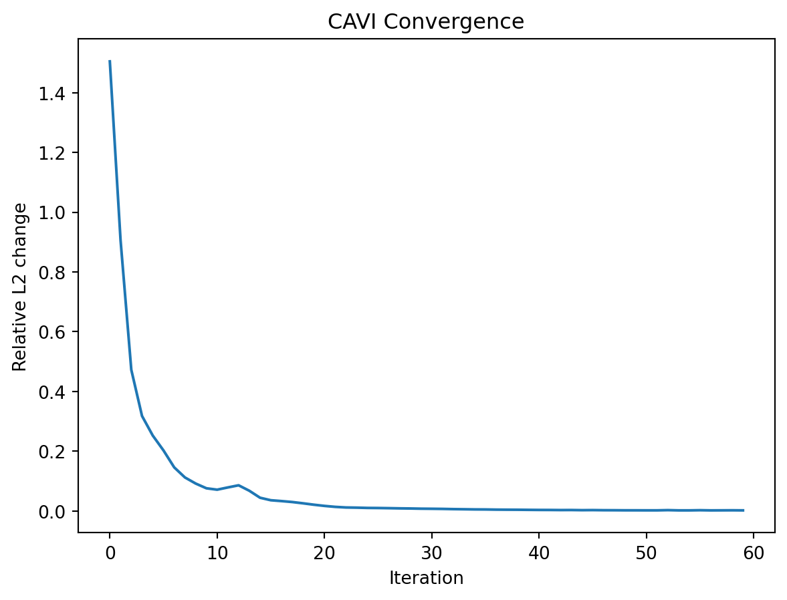
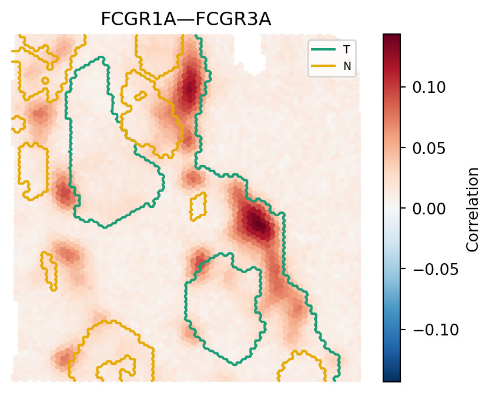
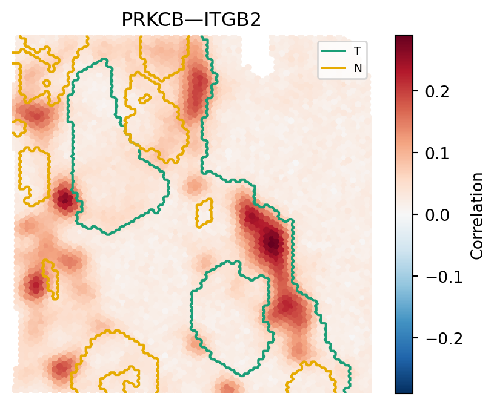

import os
import pickle
import numpy as np
import pandas as pd
import matplotlib.pyplot as plt
from scipy.interpolate import NearestNDInterpolator
import torch
import scr
import importlib.metadataData Application
Overview
We demonstrate SCG by analyzing an estrogen receptor-positive, progesterone receptor-negative, HER2-amplified invasive ductal carcinoma sample sequenced on the 10x Genomics Visium platform, comprising 4,728 spots measuring 1,173 genes (Zhao et al., 2021). The dataset was accompanied by pathologist annotations delineating tumor, intermediate, and normal regions. For demonstration purposes, we focus on the tumor-promoting inflammation pathway, which comprises 51 genes and \({}^{51}C_{2} = 1{,}275\) possible edges across 4,728 spots.
Setup
Data
For modeling purposes, we assume \(\boldsymbol{y}_i \sim \mathcal{N}_p(\boldsymbol{0}, \boldsymbol{\Sigma})\) where \(\boldsymbol{\Sigma} = \operatorname{diag}(\sigma^2_1, \dots, \sigma^2_p)\), so the observed count matrix must first undergo a suitable normalization. Here, data were normalized using the sctransform approach; however, SCG is agnostic to the choice of normalization and a rich literature on variance-stabilizing transformations for spatial omics count data exists. The model requires the expression matrix Y to be oriented as spots x genes and the spatial coordinates matrix S as spots x 2. Spot-level region annotations are not required by SCG but are included here for downstream visualization.
Y_np = pd.read_csv("../data/Y.csv").to_numpy()
spot_info = pd.read_csv("../data/spot_info.csv")
S_np = spot_info[["x", "y"]].values
spot_ids = spot_info["spot_id"].values
region_annotation = spot_info["region"].values
gene_names = pd.read_csv("../data/gene_names.csv")
# SCG requires a spots x genes matrix
Y_np = Y_np.T
N, P = Y_np.shapeModel Fitting
Initialization
Initialization plays a critical role in variational inference. We provide scr.scr_init, which implements a sparse PCA-based warm start that performs well in practice (see Supplementary Materials for further details). The two key choices are \(L\) and \(K\): we recommend \(L = \text{round}(2 \log G)\) and \(K = L\) as conservative defaults, though \(K\) can alternatively be selected via SVD to explain a desired proportion of variance.
K = L = np.round(2 * np.log(P)).astype(int)
init = scr.scr_init(
Y=Y_np,
L=L,
K=K,
a_delta=(2.1, 3.1),
b_delta=1.0,
a0=5.0,
b0=0.5,
nu=5.0,
spca_center=True,
spca_alpha=0.01,
spca_ridge_alpha=0.01,
device=scr.DEVICE,
dtype=scr.DTYPE,
)Kernel
The kernel function governs how spatial correlation decays with distance. scr.pick_kernel_params provides a data-driven heuristic for selecting hyperparameters from the initialization. For this dataset we scale the returned rho by 0.1, as the default length-scale produced overly broad spatial patterns; users should adjust this scaling if correlation fields appear too smooth or too noisy. Standardizing spatial coordinates prior to fitting can aid interpretability of the length-scale. Both squared-exponential and rational quadratic kernels are implemented; any other kernel can be substituted as needed.
kernel_hypers = scr.pick_kernel_params(init=init, S=S_np, score_quantile=0.9)
K_np = scr.rq_kernel(
S_np,
v2=1.0,
rho=0.1 * kernel_hypers["rho"],
alpha=kernel_hypers["alpha"],
)CAVI
Model fitting is done via coordinate-ascent variational inference (CAVI), which iteratively updates the variational parameters to maximize the evidence lower bound. We run for max_iter=60 iterations. Examining the convergence plot below, we note that 20–30 iterations constitute an ideal stopping point as the relative L2 change in variational parameters is quite small thereafter. Users should increase the maximum number of iterations if the relative L2 change has not flattened by the final iteration.
fit = scr.cavi(
torch.as_tensor(Y_np, device=scr.DEVICE, dtype=scr.DTYPE),
torch.as_tensor(K_np, device=scr.DEVICE, dtype=scr.DTYPE),
init,
max_iter=60,
verbose=False,
)with open("../results/fit.pkl", "rb") as f:
fit = pickle.load(f)Convergence
trace = fit["trace"]
plt.plot(trace["L2_rel"])
plt.xlabel("Iteration")
plt.ylabel("Relative L2 change")
plt.title("CAVI Convergence")
plt.show()
SCG Identification
SCG identification is performed via scr.classify_edges, which applies Otsu thresholding to the posterior spatial standard deviations of each edge to obtain a data-driven threshold, then classifies edges as SCGs by controlling the false discovery rate at \(\alpha = 0.1\). The function returns a dataframe with one row per edge and a boolean scg column indicating classification. For this dataset, 143 of 1,275 possible edges were identified as SCGs, corresponding to 11.2% of all edges in the tumor-promoting inflammation pathway.
To avoid materializing an M x N x p x p array, where M denotes the number of posterior samples, scr.classify_edges takes a streaming approach, materializing only an M x E array where E denotes the number of edges (i.e., \(\binom{p}{2}\)). Users who wish to obtain posterior samples for downstream analysis can use the scr.sample_* functions.
results = scr.classify_edges(fit["params"], M=500, alpha=0.1)
results.to_csv("../results/results.csv")results = pd.read_csv("../results/results.csv", index_col=0)
scgs = results[results["scg"]]
print(f"{len(scgs)} SCGs identified out of {len(results)} edges")143 SCGs identified out of 1275 edgesResults
Reconstructing Correlation Fields
The scr.cavi function returns a dict {"params": params, "trace": trace} where params contains Torch tensors. We provide the convenience function scr.to_numpy for easy conversion to NumPy arrays.
The analytical posterior mean covariance at each spot \(i\) is given as:
\[\mathbb{E}_q[\boldsymbol{\Sigma}(\mathbf{s}_i)] = \boldsymbol{\mu}_\Theta A_i \boldsymbol{\mu}_\Theta^\top + \text{diag}\left(\text{tr}(A_i \boldsymbol{\Sigma}_g^\Theta)\right)_{g=1}^G + \mathbb{E}_q[\boldsymbol{\Sigma}_0]\]
where \(A_i = \boldsymbol{\mu}_{\Xi_i} \boldsymbol{\mu}_{\Xi_i}^\top + \text{diag}\left(\sum_k v_{i,rk}^\Xi\right)\) is the posterior second moment of \(\Xi(\mathbf{s}_i)\), the einsum computes \(\text{tr}(A_i \boldsymbol{\Sigma}_g^\Theta)\) for each gene \(g\) capturing uncertainty from the global loadings \(\Theta\), and \(\mathbb{E}_q[\boldsymbol{\Sigma}_0]\) is the residual variance. The resulting covariance array is then converted to correlation matrices using scr.cov2cor.
params = fit["params"]
mu_Theta = scr.to_numpy(params["mu_Theta"])
mu_Xi = scr.to_numpy(params["mu_Xi"])
var_Xi = scr.to_numpy(params["var_Xi"])
sigma2 = scr.to_numpy(params["b_sigma"]) / (scr.to_numpy(params["a_sigma"]) - 1)
Sigma_Theta = scr.to_numpy(params["Sigma_Theta_list"])
Sigma_est = np.empty((N, P, P))
diag_sigma = np.diag(sigma2)
for i in range(N):
A_i = mu_Xi[i] @ mu_Xi[i].T + np.diag(var_Xi[i].sum(axis=1))
diag_corr = np.einsum("kl,gkl->g", A_i, Sigma_Theta)
Sigma_est[i] = mu_Theta @ A_i @ mu_Theta.T + np.diag(diag_corr) + diag_sigma
Corr_est = np.array([scr.cov2cor(C) for C in Sigma_est])
np.save("../results/Corr_est.npy", Corr_est)Corr_est = np.load("../results/Corr_est.npy")Spatially Varying Edges
We plot two representative SCG pairs alongside pathologist-annotated region boundaries. For each edge, the color at each spot encodes the posterior mean correlation, with red indicating positive co-expression and blue indicating negative co-expression.
boundary_colors = {
"T": "#1B9E77",
"N": "#E6AB02",
}
def plot_corr_field(Corr, S, region_annotation, g, g_prime, gene_list=None):
field = Corr[:, g, g_prime]
df = pd.DataFrame(S, columns=["x", "y"])
df["corr"] = field
df["region"] = region_annotation
vmax = df["corr"].abs().max()
regions = pd.Categorical(df["region"])
region_codes = regions.codes
region_names = regions.categories
grid_x, grid_y = np.meshgrid(
np.linspace(df["x"].min(), df["x"].max(), 300),
np.linspace(df["y"].min(), df["y"].max(), 300),
)
interp = NearestNDInterpolator(S, region_codes)
grid_labels = interp(grid_x, grid_y)
fig, ax = plt.subplots(figsize=(5, 4))
sc = ax.scatter(
df["x"], df["y"], c=df["corr"], cmap="RdBu_r", vmin=-vmax, vmax=vmax, s=10
)
plt.colorbar(sc, ax=ax, label="Correlation")
handles = []
for region, color in boundary_colors.items():
if region not in list(region_names):
continue
code = list(region_names).index(region)
binary_grid = (grid_labels == code).astype(float)
ax.contour(
grid_x,
grid_y,
binary_grid,
levels=[0.5],
colors=[color],
linewidths=1.5,
)
handles.append(plt.Line2D([0], [0], color=color, lw=1.5, label=region))
ax.legend(handles=handles, fontsize=7)
g_label = gene_list[g] if gene_list is not None else g
g_prime_label = gene_list[g_prime] if gene_list is not None else g_prime
ax.set_title(f"{g_label}—{g_prime_label}")
ax.axis("off")
plt.show()
plot_corr_field(
Corr_est,
S_np,
region_annotation=region_annotation,
g=2,
g_prime=4,
gene_list=gene_names["gene"].values,
)
plot_corr_field(
Corr_est,
S_np,
region_annotation=region_annotation,
g=39,
g_prime=49,
gene_list=gene_names["gene"].values,
)

Session Info
for pkg in ["numpy", "torch", "scipy", "scikit-learn", "scr"]:
print(f"{pkg}: {importlib.metadata.version(pkg)}")numpy: 2.4.6
torch: 2.12.0
scipy: 1.17.1
scikit-learn: 1.8.0
scr: 0.1.0